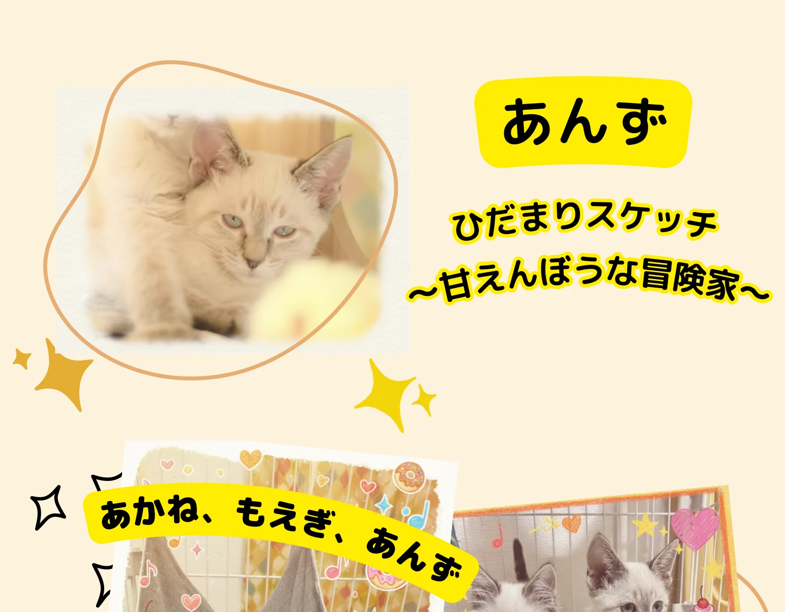
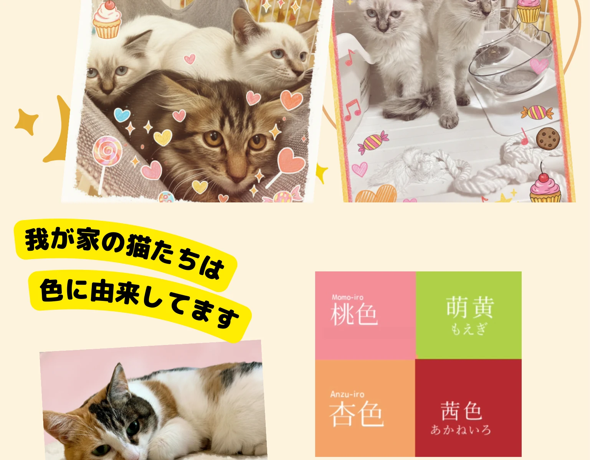
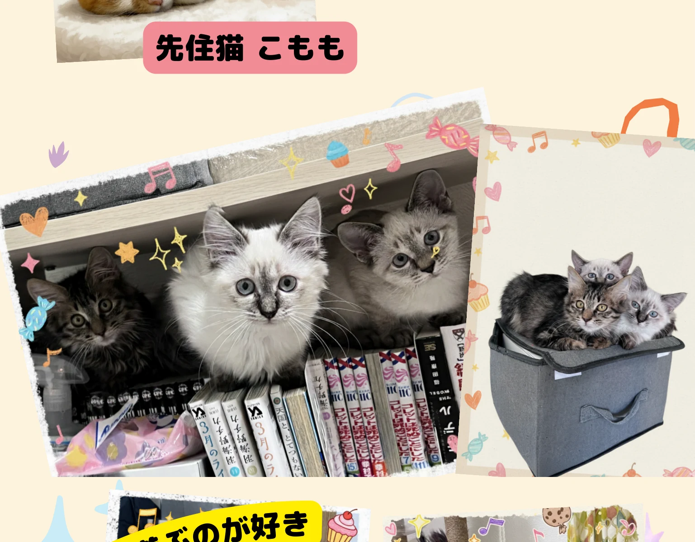
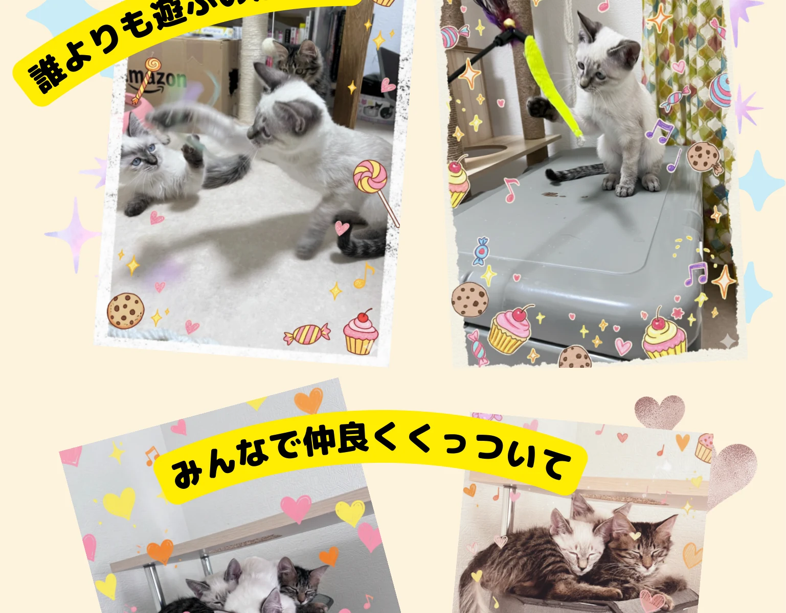
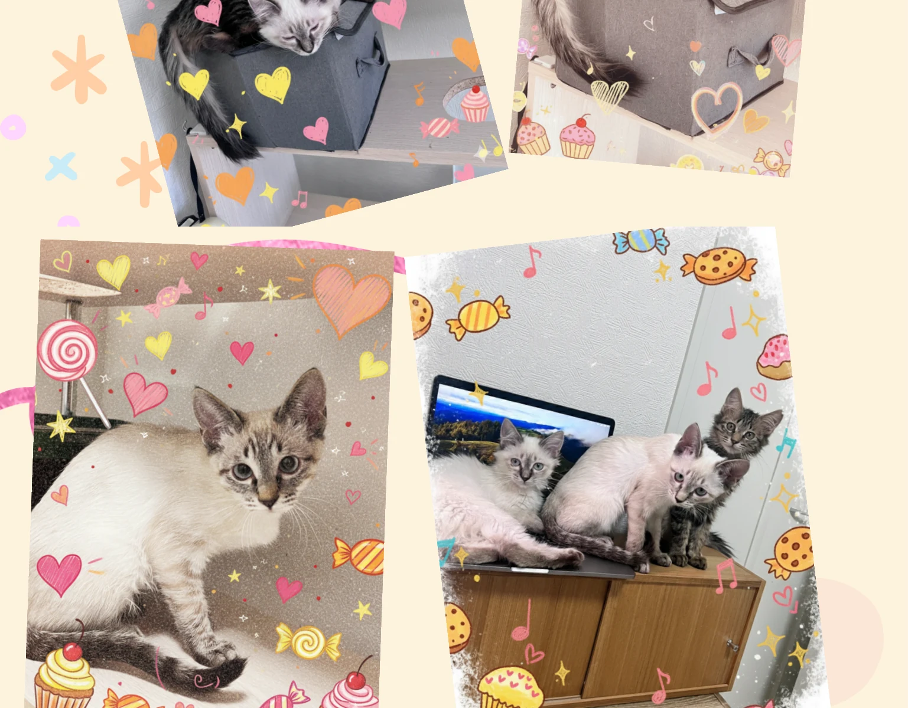
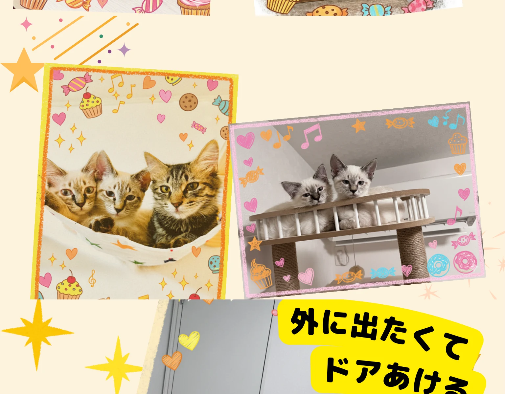
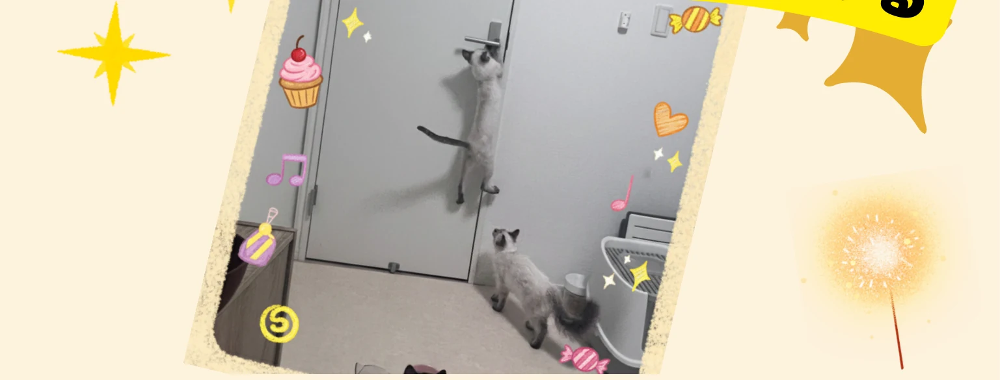

あんず｜ひだまりスケッチ 〜甘えんぼうな冒険家〜
1 / 4







写真に添えた言葉
あんず。ひだまりスケッチ 〜甘えんぼうな冒険家〜。
あかね、もえぎ、あんず。我が家の猫たちは色に由来してます。先住猫 こもも。
誰よりも遊ぶのが好き。みんなで仲良くくっついて。外に出たくてドアあける。
1 / 4







あんず。ひだまりスケッチ 〜甘えんぼうな冒険家〜。
あかね、もえぎ、あんず。我が家の猫たちは色に由来してます。先住猫 こもも。
誰よりも遊ぶのが好き。みんなで仲良くくっついて。外に出たくてドアあける。